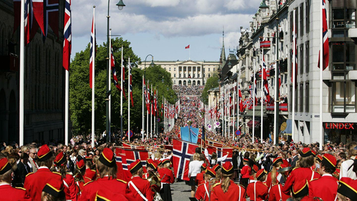
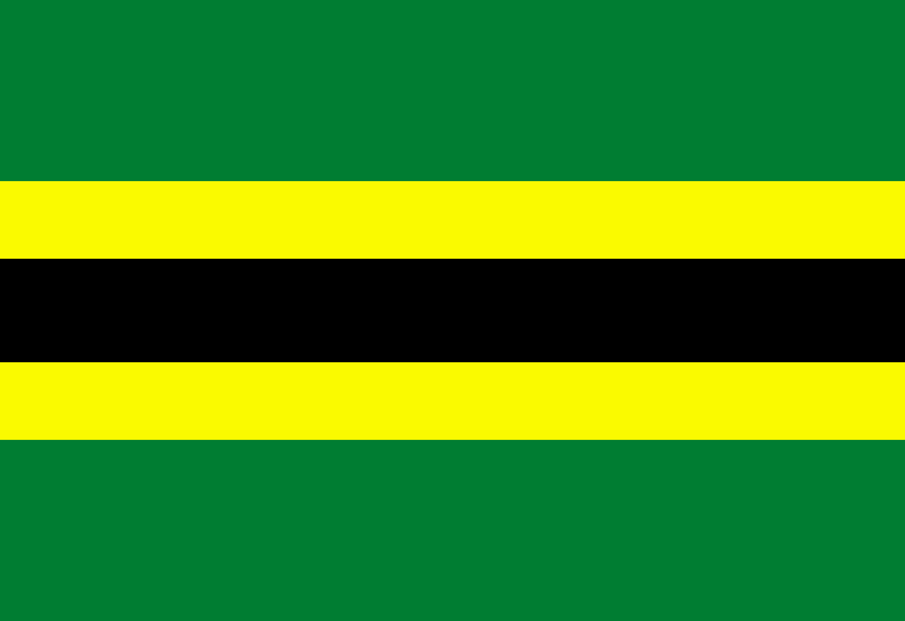
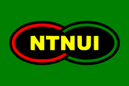
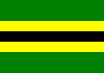
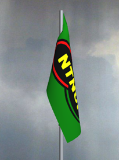
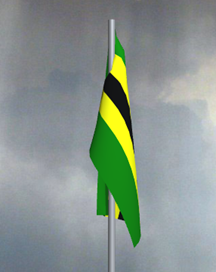
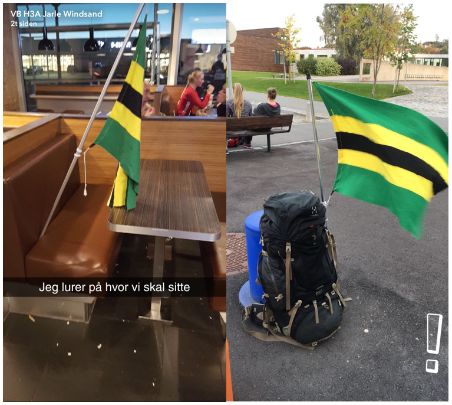

Dato: 08/11/17
Forfatter: Frédéric Ménard Lindboe
Jeg heter Frédéric, spiller volleyball for NTNUI og elsker flagg. Det siste ble jeg av å ha sett denne TED-talken. Den er, helt oppriktig, noe av det mest inspirerende jeg noensinne har sett. Jeg anbefaler deg å faktisk se hele videoen før du leser dette innlegget videre. Jeg kommer nemlig til å ta utgangspunkt i sitater derfra for å strukturere argumentene om hvorfor jeg mener NTNUI bør få et nytt flagg.
1:22
Sometimes I bring up the topic of flags, and people are like, "I don't care about flags," and then we start talking about flags, and trust me, 100 percent of people care about flags. There's just something about them that works on our emotions.
Dette bildet vekker nok noen følelser i deg. Det norske flagget assosieres både med lykkelige stunder og folkefester.
2:02
What I love about flags is that once you understand the design of flags, what makes a good flag, what makes a bad flag, you can understand the design of almost anything.
Veldesignede flagg er enkle og distinkte: Når du først har lært at blåhvitt kors på rød bunn representerer Norge så vil du aldri glemme det, og du ville gjenkjent et vaiende norsk flagg hundrevis av meter unna.
5:09
It's adaptable and remixable.
Gode flagg er anvendelige. Som vist over kan det norske flaggets fargemønster brukes på mange ulike måter. Det blåhvite korset på den røde skidressens arm og de røde og blå stripene langs de gamle politibilene skaper entydige og unektelige assosiasjoner til Norge.

Det er ikke bare nasjoner som bruker farger for å vise tilhørighet. Idrettsklubber gjør det også. NTNUI er en klubb med et helt unik fargemønster. Se på bildene over eller søk etter NTNUI-bilder på Google! Hvilket mønster har de til felles? En grønn bunn delt av to gule og én svart stripe. Alle NTNUI-utøvere bruker dette fargemønsteret i en eller annen form. Det bare oser NTNUI på lang avstand!
Da Andreas Wahl var konferansier under NTNU-immatrikuleringen i august 2016 sa han noe ganske interessant etter NTNUI Dans sin fremføring (se video 1:16:40-1:17:20)
Kanskje noen av dere tenker som jeg da jeg flytta hit. De grønngule NTNUI-fargene er kanskje ikke... the shit. Men jeg kan love dere noe, og dette er veldig rart: Fra jeg gikk ut herfra, hver gang jeg ser NTNUI-drakter, og jeg ser det ganske ofte over hele landet, blir jeg ordentlig varm og glad langt inni hjerterota for at de kommer fra Trondheim, samme sted som meg. Dere kommer til å bli glad i de fargene, det kan jeg love dere!
Denne tilhørigheten som Andreas Wahl har fått til NTNUI og Trondheim fra NTNUI-fargene er akkurat slike følelser man vil vekke med flagg. Man skulle dermed trodd at et NTNUI-flagg brukte nettopp disse fargemøsntrene. Dessverre, synes jeg, ser NTNUI-flagget i dag slik ut:
7:27
If you need to write the name of what you're representing on your flag, your symbolism has failed.
Dagens NTNUI-flagg er en NTNUI-logo på grønn bunn. Det assosiasjonssterke fargemotivet kommer ikke særlig tydelig frem. Andreas Wahl referer til 'NTNUI-fargene', ikke til NTNUI-logoen. Flagg blir gode idet man tilegner dets motiv en betydning. Men når NTNUI står skrevet eksplisitt på flagget så blir motiv og hva flagget skal representere én og samme ting. Da er betydningstilegnelsesprosessen gjort for deg allerede. Derfor synes jeg at dagens NTNUI-flagg ikke symboliserer NTNUI godt nok. Tenk deg om Norges flagg hadde vært designet på samme måte.

Jeg har ingen tro på at Norge hadde hatt samme flaggtradisjoner under 17. mai eller skiidrettsarrangementer dersom flagget hadde sett slikt ut.
Jeg mener altså at flagget til NTNUI bør spille på abstrakte, men assosiasjonssterke fargemøsntre. Det trenger altså noe som skriker NTNUI uten å si det eksplisitt. Med det som utgangspunkt blir hvordan et NTNUI-flagg bør se ut, for meg, ganske åpenbart og det håper jeg du som leser nå er blitt enig i:
Ingenting skaper sterkere assiosiasjoner til NTNUI bedre enn de karakteristiske to gule og den ene svarte stripen på den grønne bunnen. NTNUI-flagget bør være intet mer, intet mindre. Tykkelsen til stripene i forhold til hverandre kan diskuteres, fargenyansene kan justeres, men hvordan kjernemotivet bør være er for meg krystallklart!
17:11
[...] a great city flag is something that represents a city to its people and its people to the world at large. And when that flag is a beautiful thing, that connection is a beautiful thing.
Bytter du ut “city” med “club” og “world” med “Norway” kan du relatere det til hva Andreas Wahl mente med å bli “varm i hjerterota” når han ser NTNUI-fargene rundt omkring i landet.
15:37
[...] it isn't just that people love Chicago and therefore love the flag. I also think that people love Chicago more because the flag is so cool.
Igjen, bytt ut “Chicago” med “NTNUI”.
17:11
The five basic principles of flag design:
La oss nå sammenligne NTNUI-flaggene med hensyn på disse flaggdesignprinsippene:
|  |  |
| 1. Keep it simple (so simple a child can draw it from memory) | |
| NTNUI-logoen er faktisk ganske simplistisk og flagget er dermed ingen versting blant idrettsklubber. Dog er logoer vanskelige å anvende annet enn i sin hele form. | Mønsteret i dette flagget er redusert til sine kjernekomponenter og kan dermed ikke bli enklere. Anvendeligheten til mønsteret i flagget er skyhøyt, slik som illustrert i bildeserien lenger oppe. |
| 2. Use meaningful symbolism | |
| NTNUI-logoen symboliserer sammenslåingen av NTHI (grønt, gult og svart) og AVHI (rødt).Den historiske symbolikken er ganske god. Likevel anerkjenner logoflagget grønt som klubbens hovedfarge ved å bruke grønt i bunn. | Dette flagget inkluderer ikke det AVHI-røde, kun de opprinnelige NTHI-fargene. Det er synd. Men det røde er i dag nesten ikke anvendt i NTNUIs fargeprofil og (hjemme)drakter så jeg tør påstå at veldig få mennesker vil reagere på at det røde ikke er i dette flagget. Slik jeg ser det har det grønne og gulsvarte blitt omfavnet i dag av alle NTNUIs medlemmer uavhengig av campus og dermed representerer disse tre fargene nå alle. Akkurat hva dette fargemønsteret symboliserer er det få som vet (ikke jeg), men når stripemønsterets assosiasjonsverdi til NTNUI er så sterk allerede så synes jeg det holder i massevis for å lage et bra flagg. |
| 3. Use two to three basic colors | |
| Denne regelen er kanskje den mest ignorerte blant flotte flagg. Jeg synes ikke det er noe i veien med å bruke flere farger så sant fargene har en relevant betydning, kontrasten i flagget er god og det fungerer for flaggets motiv. | Dette flagget bruker de tre mest brukte NTNUI-fargene grønt, gult og svart. Å introdusere et rødt element synes jeg vil forstyrre stripemotivet og redusere den etablerte og råsterke assosiasjonen til NTNUI det allerede har. |
| 4. No lettering or seals of any kind. | |
|  Skrift er dårlig egnet på flagg av to årsaker: Det er lite slagkraftig bruk av assosiasjoner og det er vanskelig å lese på avstand og når flagget vaier speilvendt eller det ikke er vind. Klikk her for å se hvordan dette flagget ser ut vaiende med og uten vind. | Siden dette designet er redusert til sitt enkleste vil det være gjenkjennelig som NTNUI-flagg både med og uten vind vaiende rettvendt eller speilvendt! Klikk her for å se hvordan dette flagget ser ut vaiende med og uten vind. Jeg mener dette flagget hadde vært mye mer effektfullt å bruke på flaggstanga til Studenterhytta enn dagens flagg. |
| 5. Be distinctive or be related | |
| Logoflagget flagget ligner på andre idrettsklubbflagg: Molde FK og Byåsen Håndball har alle klubblogoen i flagget på ensfarget bakgrunn. På samme måte viser Norge tilhørighet til Norden ved å bruke det usentrerte nordiske korset i flagget sitt. Man kan dermed argumentere for at logoflagget viser at også NTNUI er en idrettsklubb. Jeg personlig ville sagt at det også føyer seg i rekken for under middels godt designede flagg. | NTNUIs unike fargemønster gjøre naturlig nok dette flagget også unikt. En kan si at stripene og fargepaletten gjør at flagget minner om en eller annen afrikansk “demokratisk” republikk og dermed skaper feil asosiasjoner og viser feil tilhørighet. Faktisk så flagget til den kortlevde nasjonen Tanganyika nesten slik ut! Forskjellen i stripetykkelse, fargenyanse og ikke minst bruksområde (helt urelatert tidl. nasjon vs. nåværende lokal idrettsklubb) gjør at denne potensielle forvekslingen nok ikke er noe å bry seg om: Flagg trenger primært bli gjenkjent internt for å samle mennesker med felles tilhørighet. |
Selvfølgelig finnes det mennesker utenfor student-Trondheim som ikke vil gjenkjenne stripeflagget som NTNUI-flagg. Hvordan skal man vise overfor dem at man er fra NTNUI? Jo, stripeflagg som brukes på idrettsarrangement vil ha NTNUI-utøvere tilstede. Disse utøverne har oftest på seg NTNUI-klær med samme fargemønster og med NTNUI tydelig skrevet på ryggen eller i logoen på brystet. Ev. kan man fra før vite at de med grønne drakter og gulsvarte striper tilhører NTNUI. Det vil derfor uansett fort bli veldig åpenbart hvilken klubb stripeflagget representerer og da vil assosiasjonen mellom fargemønsteret på flagget og klubben NTNUI feste seg også hos eksterne idrettsutøvere. Jeg vil også si at flere vil vaie stolt med stripeflagget enn med logoflagget. Dersom eksterne ser mange kledd i grønt, gult og svart som vaier entusiastisk med stripeflagget vil de kanskje bli nysgjerrige og spørre noen “Unnskyld? Hvilket flagg er det? Jeg så det på lang avstand!” og da vil de få svaret “Det er NTNUI, klubbflagget til alle disse idrettsutøverne som er kledd i de samme fargene!”.
For at eksterne skal kunne tolke logoflagget må de, med mindre det blåser sterkt, komme så nærme flagget for å kunne lese “NTNUI” på bannere eller på noens klær i nærheten uansett.
Avslutningsvis vil jeg dele noen bilder av et NTNUI-stripeflagg jeg har sydd selv og brukt på volleyballarrangementer i hele høst. Jeg har også vist det for andre i student-Trondheim og spurt hvilket flagg de tror det er: De fleste svarer NTNUI og blir overrasket når jeg forteller dem at NTNUI egentlig har et annet flagg som ikke ser sånn ut. Jeg utfordrer deg til å prøve dette selv!
Jeg kommer sannsynligvis til å fremme et forslag om å få anerkjent dette stripeflagget som NTNUI-flagg ved NTNUI hovedstyrets generalforsamling i februar 2018. Dersom du er NTNUI-medlem og enig i dette innleggets budskap håper jeg du vil stille opp for å stemme frem forslaget. NTNUI fortjener et flott flagg.
Med håpefull hilsen
Frédéric Ménard Lindboe,
Flaggentusiast og volleyballspiller for NTNUI på sjette sesong